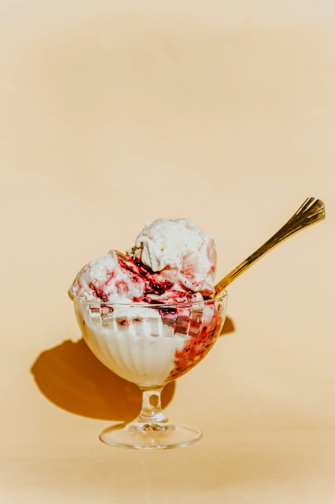

Ice cream is a popular frozen dessert made from cream or butterfat, milk, sugar, and flavorings. Some kinds, such as frozen custard and French-style ice cream, also have eggs.
Commercial ice cream is made by mixing liquid ingredients like milk, cream, and syrups with dry ingredients like sugar, stabilizers, and dried eggs or milk. This mix is pasteurized, homogenized, ripened in a refrigerated vat, and then combined with chopped fruit or nuts. While freezing, the mix is agitated to incorporate air and control ice crystal size. Finally, the partially frozen ice cream is packaged and hardened.